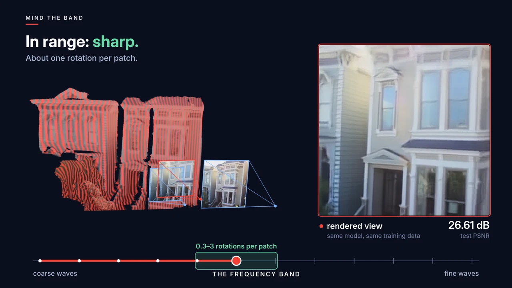
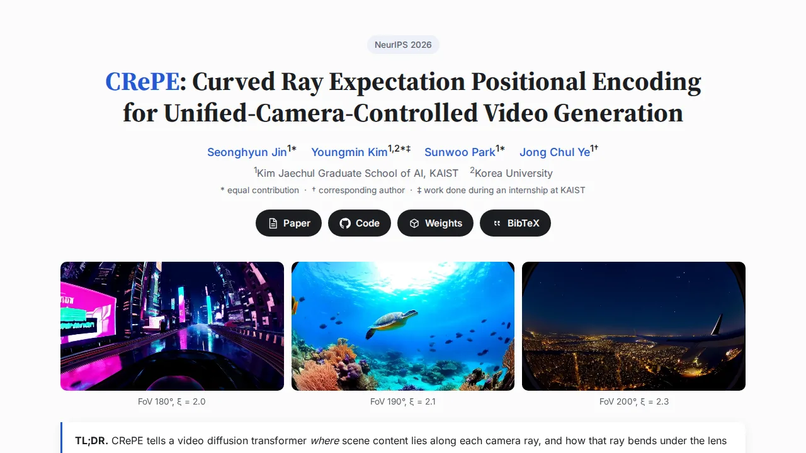

GALILEO
Geometric RoPE with Galilean Key Transport for Dynamic Scenes
Project pages
Geometric RoPE with Galilean Key Transport for Dynamic Scenes

The Hidden Frequency Variable in Geometric RoPE

Curved Ray Expectation Positional Encoding for Unified-Camera-Controlled Video Generation
Dynamic Manipulation with World-Action Models via Counterfactual Planning